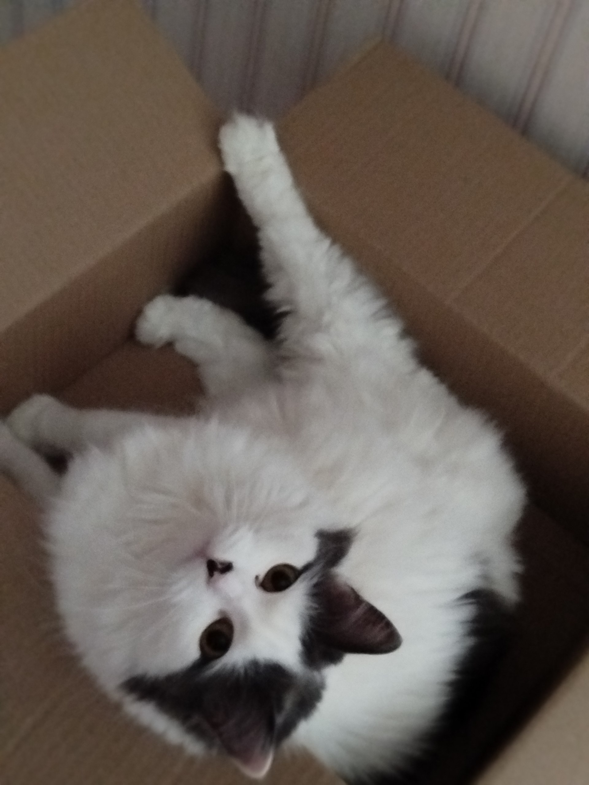

Список основных обязанностей
Ниже представлен исчерпывающий список задач, которые каждый уважающий себя кот выполняет ежедневно. Внимательно изучите его и выразите своему коту благодарность!
-
Кот должен отсыпаться за человека, всех его родственников, друзей и соседей вместе взятых.
- Кот должен защищать человека от комнатных растений.
- Кот постоянно должен поддерживать человека в форме, заставляя его непрестанно двигаться по квартире, нагибаться, собирая ручки, карандаши, носки и т. д.
- Кот должен крепко держать зубами ручку или карандаш, пока человек пытается писать.
- Кот постоянно должен проводить ревизию в холодильнике, даже если человек этого не хочет. Если он не хочет, значит, что-то там прячет, и с этим что-то следует хорошенько разобраться, а потом уж призвать к ответу самого человека.
- Кот должен ночью каждый час проверять, не заползла ли под одеяло человеку какая-нибудь змея.
- Кот время от времени должен тренировать себя на случай непредвиденного циркового выступления. Для этого он должен периодически устраивать полеты под куполом дома, прыжки с гардины на люстру и обратно и другие всевозможные запрыгивания.
- Кот должен помогать человеку стелить постель, внимательно наблюдая, чтобы под простыней не оказалось никаких предметов.
- Кот должен помнить, что сон для человека – это пустая трата времени, поэтому, завидев спящего человека, необходимо тут же его разбудить, прыгнув ему на живот, а еще лучше на голову.
- Кот должен каждое утро напоминать человеку старую пословицу:
Кто рано встает, тому Бог дает
. И чем раньше встанет человек, тем больше ему (а заодно и коту) даст Бог. - Кот должен делиться с человеком всем, что у него есть. Постоянно отдавать часть мера на утепление одежды и пола и выкидывать половину еды из чашки.
- Кот должен петь песни, чтобы доставлять человеку радость. Даже если песни грустные.
- Кот должен проверять, по какой причине кто-то не закрыл шкаф или тумбочку и не задвинул ящик.
- Кот должен отгонять от человека плохие сны. Если кот заметит, что человек ворочается в постели, он непременно должен прыгнуть человеку на голову и начать отгонять дурные сны и кошмары.
- Кот должен знать, что лежит во всех коробках и пакетах. И на личном опыте убедиться, насколько там удобно и хорошо находиться.
- Кот должен во время сна человека заглушать наружный шум, громко урча под ухом.
Вот моя кошечка! Её зовут Алиса.
